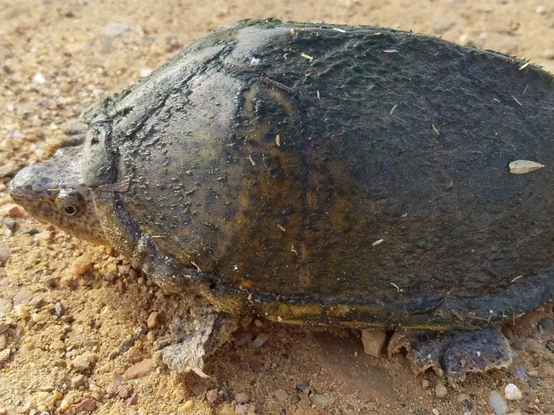

背甲の中央に走る鋭いキール（稜線）が特徴的な、北米ミシシッピ川流域の水棲ガメ。ニオイガメ属の中で最大種でありながら、60cm水槽から飼育できる手頃なサイズ感が人気の理由です。

1年後の甲長は6〜9cm程度。背中の3本の稜線（キール）が際立ち始め、個体の個性が出てくる。水底を歩くように移動しながら、時々浮上して息を継ぐ。ニオイガメ属に近い管理で飼育しやすい時期になる。
10年後は甲長12〜15cm程度、重さ200〜400g程度が多い。ミシシッピニオイガメよりやや大きめに育つ傾向があるが、30〜45cm水槽で飼い続けられる範囲内。成体になると3本のキールが一層際立ち、独特の外見が完成する。
カブトニオイガメはニオイガメ属と近縁だが、水面への浮上頻度や泳ぎ方に個体差が出やすい。ニオイガメと同じ深めの水位設定にすると、息継ぎに苦労する個体もいる場合がある。水深は背甲高の2〜3倍程度を目安に、個体の行動を見ながら調整するのが安定への近道。
カブトニオイガメはアメリカ合衆国のアーカンソー州南部、オクラホマ州南東部、テキサス州東部、ミシシッピ州、ルイジアナ州に分布します。底質が泥や砂で水生植物が繁茂する流れの緩やかな河川や池沼などに生息しています。
背中の鋭い隆起が特徴的で、英名「Razorback（カミソリのような背中）」はこのキールを表しています。最大甲長16cmとニオイガメ属の最大種ですが、体は比較的コンパクトにまとまっています。
野生下では明け方前の薄暗い頃や夕方に活動することが多く、夏は昼間の太陽が照りつける時間帯には水底の方に潜ってじっとしていることが多いとされています。他のニオイガメ属と比べると日光浴を観察する機会が多く、夜行性の特徴は弱いです。
野生下での食性は動物食の強い雑食で、魚類・昆虫・甲殻類・貝類・両生類・動物の死骸・藻類などを食べます。大きな頭部と強い顎で貝類などの硬い食物も噛み砕けるのが特徴で、個体によっては巨頭化（メガセファリー）するものもいます。
ミシシッピ川流域の緩流・水草帯という野生環境から逆算します。水質管理が飼育の核心で、水を汚しやすい種であるためフィルター選びが最重要です。
動物食の強い雑食性です。カメ専用の人工フード（レプトミン・カメプロスなど）を主食にできますが、栄養の多様化のためにコオロギ・冷凍赤虫・乾燥エビなど動物性食品を補助的に与えると良いです。
動物性の餌としてはイトミミズ・コオロギ・小魚・冷凍赤虫などが適しています。植物性の餌としては小松菜・チンゲン菜なども食べます。
ベビーの場合は毎日食べられるだけ与えますが、大人になったら3日に1回程度に減らしましょう。食べ残しは水を汚す原因になるので早めに取り除いてください。
水質管理が最重要。フィルターは必須で、ろ過能力の高いものを選びます。
海外の飼育実務では単独に24インチ（約61cm）・ペアに36インチ（約91cm）水槽が定番とされており、これは日本の60cm・90cm規格にそのまま置き換えられます。ミシシッピニオイガメより一回り大きくなる分、最初から60cm規格を用意するのが失敗の少ない選び方です。
本種を含むニオイガメ属は2023年からCITES附属書IIに掲載されています。これは輸出入時の規制で、国内で繁殖されたCB個体の購入は通常どおり行えます。
ページ内の数値は国内飼育の一般的な目安を含みます。確定的な資料が乏しい項目（寿命など）は断定していません。
水棲ガメをほかにも見てみたい方、または自分に合う種を探している方は診断ツールへ。
🐢 あなたに合う亀を診断する（119種対応）カブトニオイガメは丈夫で飼育しやすいニオイガメ属の入門種。小型水槽から始められます。